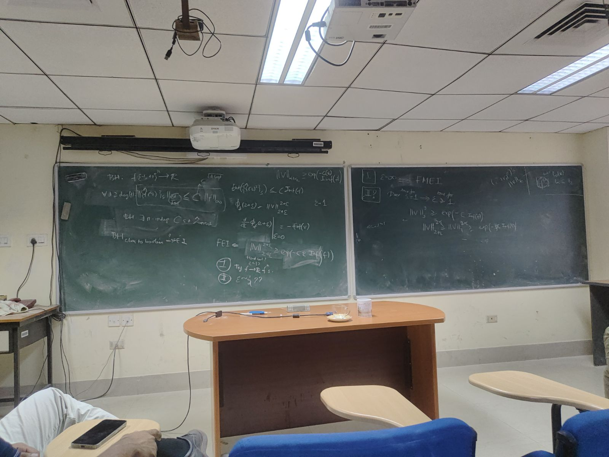

\[ \newcommand{\Var}{\mathrm{Var}} \newcommand{\E}{\mathbb{E}} \newcommand{\H}{\mathbb{H}} \newcommand{\Inf}{\operatorname{Inf}} \]
Fourier Entropy Influence Conjecture is a conjecture in the analysis of boolean functions which states that for any boolean function \(f:\{-1,1\}^n \to \{-1,1\}\), there is a constant \(C\) independent of the dimension \(n\) such that
\[ H(\hat{f}^2) \leq C \cdot I(f) \]
I wish to understand the existing literature in FEIC before I start working with Prof. Sourav Chakraborty. Even if I don’t make any progress in the Summer, I believe something will click in the time I will be at ENS Paris. Let’s begin. I started by visiting the EmergentMind page on this conjecture and scouring through the guest post on the Terrance Tao blog by Gil Kalai.
Some recent results in the FEIC are:
(2020): Towards a Proof of the Fourier–Entropy Conjecture? (Esty Kelman, Guy Kindler, Noam Lifshitz, Dor Minzer, Muli Safra), with talks at lecture1, lecture2
(2023): A new bound for the Fourier-Entropy-Influence conjecture (Xiao Han)
First, we state the theorems proven in the first paper.
For \(\{0,1\}\) boolean functions, define the normalized influence of \(f\) as \(\tilde{I}[f] = \frac{I[f]}{\Var(f)}\).
There is \(C > 0\), such that for any function \(f:\{0, 1\}^n \to \{0, 1\}^n\), there is a non-empty \(S \subset [n]\) of size \(O(\tilde{I}[f])\) such that \(|\hat{f}(S)| \geq 2^{-C \cdot |S| \log(1 + \tilde{I}[f])}\sqrt{\Var(f)}\). In particular, \[H_\infty(\hat{f}^2) \ll \tilde{I}[f] \log(1 + \tilde{I}[f])\].
For every \(\eta > 0\), there exists \(C > 0\), such that for all \(f: \{0,1\}^n \to \{0,1\}\) we have \[\sum_S \hat{f}(S)^2 1_{|\hat{f}(S)| \leq 2^{-C \cdot \tilde{I}[f]\log(1 + \tilde{I}[f])}} \leq \eta \cdot \Var(f)\]
Next, they show a slightly weaker version of FEIC that holds for the low-degree parts of \(f\).
There exists an absolute constant \(K > 0\), such that for any \(D \in \mathbb{N}\) and \(f:\{0,1\}^n \to \{0,1\}\) we have that \[H[\widehat{f^{\leq D}}] K \sum_{|S| \leq D} |S| \log(|S| + 1)\hat{f}(S)^2 + K \cdot I[f]\]
Since \(I[f] = \sum_S |S| \hat{f}(S)^2\), this theorem is just short of FEIC by a \(\log(|S| + 1)\) factor.
Now, we state the results proven in the, recent, second paper.
There exist \(c_1, c_2 > 0\) such that for any boolean function \(f:\{-1,1\}^n \to \{-1,1\}\), we have \[H(\hat{f}^2) < c_1 \cdot I(f) + c_2 \sum_{k \in [n]} I_k(f) \log\frac{1}{I_k(f)}\]
To understand the first paper, I start with the talks. I attach the notes I took while watching the talks.
Note to self: Recall the specific case of difficulty where FEIC and another conjecture (ref: SouChak) is stuck on. Something about flat polynomials and MinEntropy conjecture. A more specific example could both make the conjecture harder or easier to solve. (As Lipschitz concentration-type results are largely for general Lipschitz functions.) However, it can be used as a test against the results in the papers cited above, to understand the relative strength of the techniques (in particular, in every step) involved, and also against new ideas that I come up with.
Here’s an, updating, TODO list of things I wish to do asap:
Update [28th April 2026]:
- I have gone through the main arguments of Sourav Chakraborty’s 2019 paper, that, among other things, shows a (albeit, weak) connection of the FEI to the Bohnenblust-Hille inequality in Harmonic Analysis.
- I have gone through Peijei’s paper. I believe it shows the limit of what, just, the probabilistic structure of the Fourier spectrum of REAL boolean functions can give us. It is a nice proof. One can ask: what other Markov Chains could one construct here? However, the main difficultiy is, still, in the structure of the spectrum of \(\{-1,1\}\)-valued functions. Could I create Markov chains that DEPEND on the booleanity of the function?Using the Fourier Coefficient identity \(\hat{f} \star \hat{f} = \delta_{\emptyset}\) one extracts sign information about the coefficients. For homogenous functions \(f\), one then studies \(L_f\) and it turns out using this identity one can prove a beautiful identity about the Gram matrix that connects \(L_f\) to the Influences. I need to understand how to better work with tensors and \(L_f\) because it seems like an extremely useful tool.
- FEIC essentially states that the growth rate of the norm of the coefficient vector at 2 is bounded above by total influence. Note that norm of the coefficient vector DOESN’T store any information about the sign structure of the coefficients. SO WHERE DOES THE SIGN INFORMATION GO? Does it only matter when I prove the Gram matrix form, and never again?
- When you consider the derivative or |x| wrt x, you get sgn(x). In this scenario, however, you look at |x|^2+eps and take derivative wrt eps, which gives you |x|^2+eps ln(|x|), although this gives you the entropy distribution, it doesn’t say anything about the sign information.
Update [4th May 2026]:
Reading the paper on BH-inequality over the boolean cube.
The paper uses/builds upon:
- Blei’s Inequality
to be updated….
Update [5th May 2026]:
Essentially, you have a multilinear polynomial that satisfies very specific size and sign constraints. Can I somehow relate the Entropy of the square of the coefficients, with the Influence of the function? To understand the strength of FEI, one could ask if the FEI were true, how many of these constraints would necessarily have to be true? Another view point is: if {f_hat(S)} are the coefficients then inner producting with itself leads to 1 whereas inner-producting under the shifted operation of \[S \to A \triangle S\] makes the inner-product 0. This makes the object very combinatorial. Can I generate all the constraints with just a few of these shifted operation equalities? One can simulate random coefficients and check the FEI-ratio while ensuring some “levels” of these equalities hold. You can think of these objects modded out under the \[\langle x_k^2 - 1\rangle\] ideal. If there was no mod, you could think of these vector relations as some vectorspace orthogonality relation of treating coefficient of polynomials as vector spaces. But due to this, putting a vector space structure directly is difficult. Q: Is this what matroids are about? Q: Fix n = 2 or n = 3 and write down the coefficient constraints. Can you prove FEI with these? You must be able to, if its true, since these constraints are equivalent to booleanity. If not, can you DISPROVE it? Note that these constraints are highly sensitive to perturbations, and stop being true unless a global perturbation of a VERY specific kind is made. Understand, what are the allowed perturbations, that keep you within class of vectors could be key. Define the set of all coefficient vectors that satisfy the constraints of the \(n\)’th level. Q: What can you say about this object? We know there are exactly 2^n boolean functions. Can you say something about this as n->infinity? Can you “embed” lower dimensional vectors INSIDE the higher dimensional ones? Q: Could I weaken the 0-constraints to a \[\leq \varepsilon\] constraint? Could that be easier to resolve using some Optimization techniques? What happens when I symmetrize over just a set A, instead of all permutations? Basically, I want my d-linear form to be sensitive to a particular set, and then see what is happening.
Update [11th May 2026]:
Met SouChak and Arijit Ghosh.
There were quite a few questions pondered. SouChak agrees with me that Bohnenblust-Hille tools have the key to this problem. Let’s recall what Bohnenblust-Hille, in the context of Boolean polynomials, tells you.
Let \[f : \{-1, +1\}^n \to \mathbb{R}\] be a Boolean function. Then, for all integers \(d \geq \deg(\hat{f})\), there is a universal constant \(C \in \mathbb{R}\) such that
\[ \|\{\hat{f}(S)\}_S\|_{\frac{2d}{d+1}} \leq C \cdot \|\hat{f}\|_{[-1,1]^n} = C \cdot \|f\|_\infty \]
where \(\|P\|_T\) is the supremum norm of \(P\) over \(T\).
Main questions:
Does BH imply FEIC? Note: BH on \(f\) itself cannot imply FEIC because, BH is true for all real valued functions whereas FEIC is true ONLY for Boolean-valued functions. SouChak’s paper, however, applied BH on the approximating polynomial of \(f\).
One can try applying BH on polynomials in an \(L_\infty\) ball of the approximating polynomial. One can try BH on \(L\infty\) ball of \(P_f\).
Does FEIC imply BH?
Understand how the Boolean Bohnenblust Hille paper connects to all these tools. Can you create a affine linear form that is symmetric to arbitrary sets \(A\) instead of averaging over all injections \(\varphi : S \hookrightarrow [n]\).
One recurring theme was understanding how the Entropy connects to all of this through the observation that: for a probability vector, \(v\), the Entropy \[\mathbb{H}(v) \propto -\frac{d}{d\varepsilon} \|v\|_{2 + \varepsilon}^{2 + \varepsilon}\]
How the constant of BH connects to the constant of FEIC? First question: conjecture: are they literally the same?
Can you look at the approximating polynomial which is almost-flat? I.e. basically approximating polynomials that have the properties required by the SouChak proof, instead of the best approximating polynomial? If you could show the resulting degree doesn’t have a MASSIVE blowup, one might be able to show BH => FEIC through this.
- How does the BH literature prove the optimality of \(\frac{2d}{d+1}\)? How to find the optimal norm-order \(t\) to compare \(\|\{\hat{f}(S)\}_S\|_t\) with \(\operatorname{Inf}(f)\)? -> Random polynomials via Salem-Zygmund computation.
Notice, for boolean functions \(f\), \(\|f\|_\infty = 1\), so BH tells you that \(\|\{\hat{f}(S)\}_S\|_{\frac{2d}{d+1}} \leq C\), for all \(d \geq \deg{f}\). This, essentially, leads to \(\mathbb{H}(\hat{f}^2) \leq +\infty\), which is a useless bound.
Update [15th May 2026]:
Met SouChak, Arijit Ghosh, Arikith and Manmatha at the Seminar room.

Our main focus was on the following question: Is FEIC equivalent to the following: \(\forall \varepsilon > 0, \exists C > 0, \forall n, f:\{-1, 1\}^n \to \{-1, 1\}\) one has \[ \|\{\hat{f}(S)\}_S\|_{2 + \varepsilon}^{2 +\varepsilon} \geq \exp(-C\varepsilon\operatorname{Inf}(f)) \]
RHS => FEIC:
Let \(\varphi_{f}(2 + \varepsilon) = \sum_{S \subset [n]}\hat{f}(S)^{2 + \varepsilon}\) then \[H(\{\hat{f}(S)^2\}_S) = -\frac{2}{\ln(2)}\left[\frac{d}{d\varepsilon}\varphi_f(2 + \varepsilon)\right]\Bigg|_{\varepsilon = 0}\]
\[= \lim_{\varepsilon \downarrow 0}\frac{2}{\ln(2)}\frac{1 - \varphi_f( 2+\varepsilon)}{\varepsilon} \leq \frac{2}{\ln(2)}\lim_{\varepsilon \downarrow 0}\frac{1 - \exp(-C\varepsilon\Inf(f)}{\varepsilon} = C\Inf(f)\]
Some recap on Renyi Entropies before going back to the other side. Let \(X\) be a discrete random variable with an alphabet set \(\mathcal{A} = \{x_1, \cdots, x_n\}\) with corresponding probabilities \(p_i = \operatorname{Pr}(X = x_i)\). Then, the Renyi entropy of order \(\alpha \in (0, \infty)\), \(\alpha \neq 1\) is defined as
\[ \H_\alpha(X) = \frac{1}{1-\alpha} \log\left[\sum_{i = 1}^{n} p_i^\alpha\right] \]
We also have:
\(\lim_{\alpha \to 1} \H_\alpha(X) = \H(X)\)
\(\H_\alpha(X) = \frac{\alpha}{1 - \alpha}\log(\|P\|_\alpha)\) where \(P\) is the probability vector associated to the alphabet \(\mathcal{A}\).
\(\H_\alpha(X)\) is non-increasing in \(\alpha\).
FEIC => RHS:
Let \(v^2 = \{\hat{f}(S)^2\}_S\) be the squared-coefficient vector associated to the function \(f\). We have \(\H_{1 + \varepsilon}(v^2) \leq \H_1(v^2)\). From FEI, we have \(\H_1(v^2) \leq C\Inf(f)\), thus,
\[ \frac{1+\varepsilon}{-\varepsilon}\log(\|v^2\|_{1 + \varepsilon}) = \H_{1 + \varepsilon}(v^2) \leq C\Inf(f) \]
Thus,
\[ \log(\|v^2\|_{1 + \varepsilon}) \geq \frac{-\varepsilon}{1+\varepsilon}C\Inf(f) \]
\[ \|v^2\|_{1 +\varepsilon}^{1+\varepsilon} \geq \exp(-C\varepsilon\Inf(f)) \]
Equivalently,
\[ \|\{\hat{f}(S)\}_S\|_{2 + \varepsilon}^{2+\varepsilon} \geq \exp\left(-\frac{C\varepsilon}{2}\Inf(f)\right) \]
I realized this later, but, essentially, this is the series of conjectures
\[ \left\{\mathbb{H}_{1 + \varepsilon} \leq C\Inf(f)\right\}_\varepsilon \]
and that is why, naturally, you get FMEI (Fourier Min-Entropy Conjecture) out of \(\varepsilon \to \infty\).
Some questions that were interesting were:
Can you prove an \(\varepsilon\)-dependent bound?
Using the random-polynomial arguments with real-valued and boolean-valued functions, see what comes Hunch should be nothing.
Can you do it for \(\varepsilon \sim \frac{1}{d}\)? Can you prove it for ANY \(\varepsilon\)? Can you find the “smallest-necessary” \(\varepsilon\)? Is there such an \(\varepsilon\)?
Update [24th May 2026]:
Discussed quite a few things with Arikith. I noticed that Donnel was not able to improve upon \(k^{-1/2 - o(1)}\) result without using the Invariance principle, upon which he was able to obtain the optimal \(\Var(f)/k^{1/2}\). We notice that the 2020 Esty Kelman et. al. is also stuck on a logarithmic barrier. Also, the whole analysis is never able to “witness” the structure arising from Rotational symmetry/Invariance when the max influence is small. It becomes important to see how one can utilize all of this.
Q: Can you “rotate” the space so that the “influence” of a particular variable is reduced. After the influence reduces, you can apply Invariance, replace everything with Gaussian, and then perform a inverse-rotation to get what you want.
Q: By self-tensorizing / or some other construction could you reduce the max-influence? Because then, Invariance kicks in. What is nice about self-tensorization is the resulting Entropy and Influence all have very predictable behavior. For example, mythologically, the function x_1 can be made 1/sqrt(n) [x_1 + … + x_n] by rotation.
Using Shalev’s ideas i.e. proving it for Influence 2^-s(n) where s(n) = o(n) is enough, I am thinking of connecting this to Invariance and